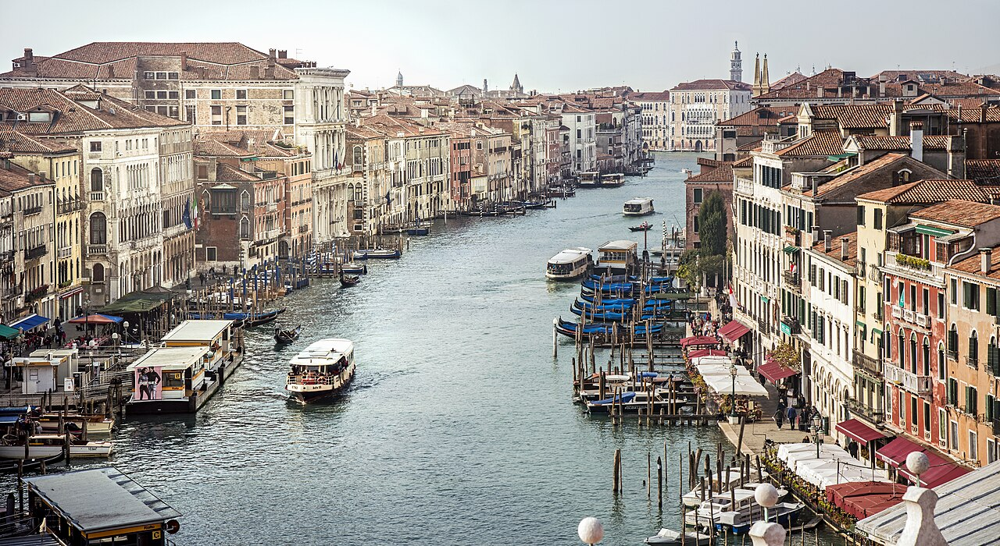

Listen to the working city
Discover places, flavours and walks. Browse suggestions, choose a tour or build your day with the stops that interest you.


Explore experiences
Browse all suggestions, search for a place or choose an interest. Add the stops you like to your day.
For example museum, market or garden. Interests are optional.
Time, cost and area
Durations are estimates; costs and accessibility are shown only when documented. Missing information is flagged in the details.
Your tour, beyond the postcard
Optionally choose company or age, then a maximum time and an interest: every combination has suggestions from 90 minutes to 4 hours. Short versions select a few stops; longer ones allow more visits and breaks. With indoor options also includes outdoor sections.
On the go, without wasting time
Practical info
🚇 Getting around
Plan your journeys on the local transport operator’s official website: routes, schedules, fares and accessibility can change.
🗓️ When to go
Check weather, event schedules and route conditions for your travel dates. Crowds vary: no time of day guarantees a queue-free visit.
🎟️ Booking
For museums, performances, classes and activities, choose a date and check availability, prices and terms on the operator’s website. Itineraries are suggestions, not reservations.